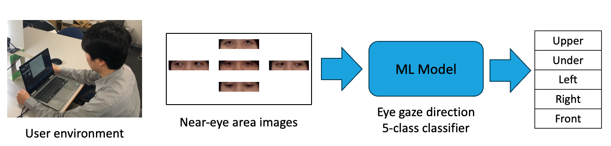
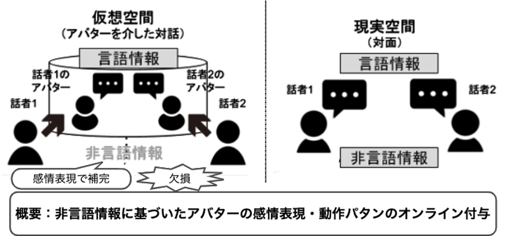
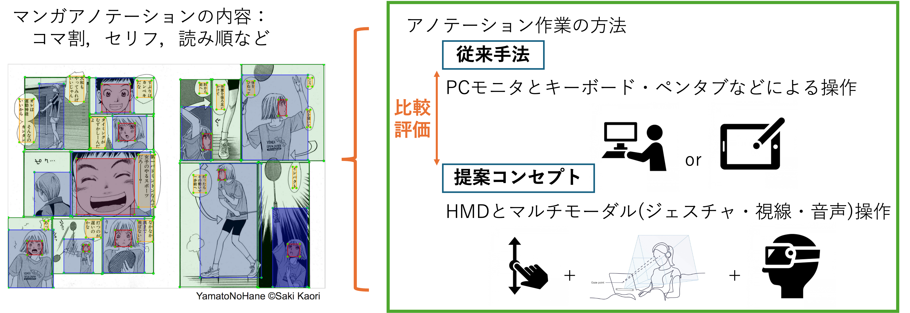
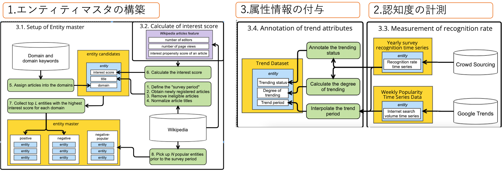
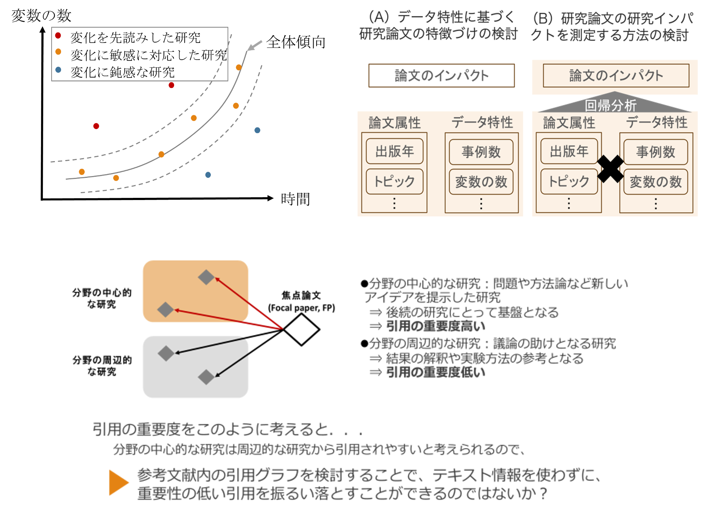
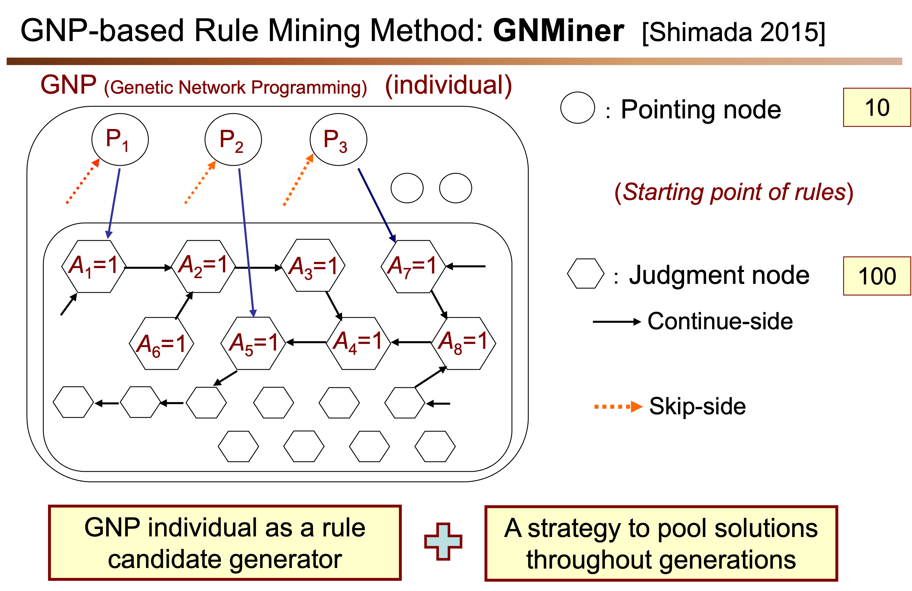
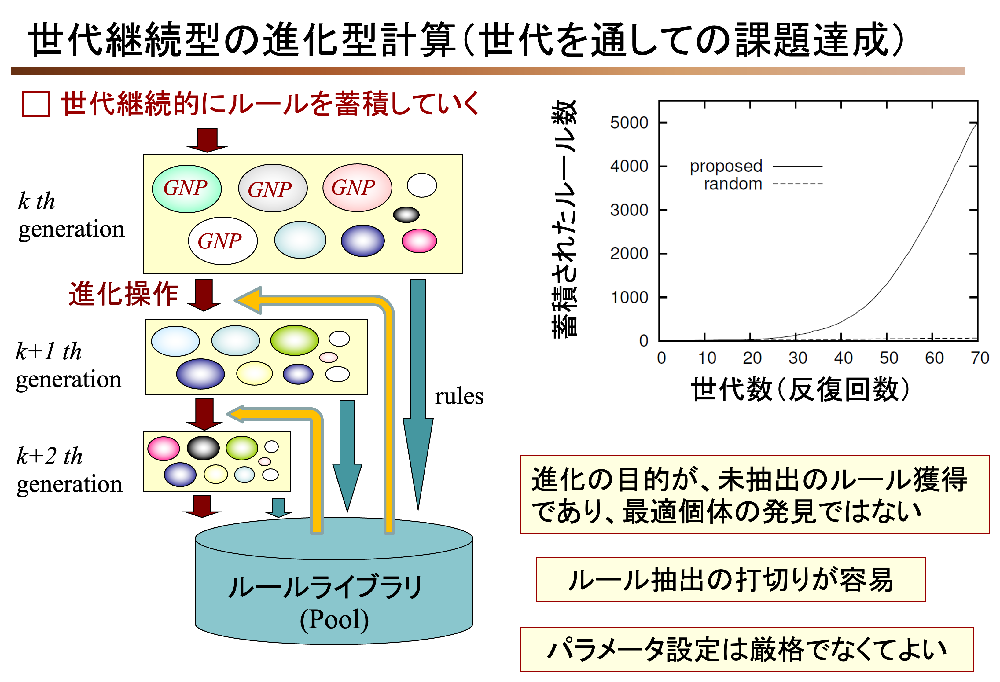

電気通信大学 大学院情報理工学研究科 情報学専攻
デザイン思考・データサイエンスプログラム
松野研究室
最近の研究活動
- 感性情報を用いた不随意コミュニケーションの分析
- 不随意反応を用いた入力インタフェース開発
- 生体計測による情動反応の推定
- アバター間コミュニケーションの分析
研究活動は必ずしも上記に限りません。興味の赴くままにいろいろとやっています． (このページは時間のあるときに適宜更新します．)
HCI・感性インタフェース
視線・瞬目入力インタフェース

TBD
- Shogo Matsuno, Daiki Niikura, Kiyohiko Abe: "Gaze Direction Classification Using Vision Transformer." 15th International Congress on Advanced Applied Informatics Winter (IIAI-AAI-Winter 2023), 193-198, 2023.
- Hironobu Sato, Kiyohiko Abe, Shogo Matsuno, Minoru Ohyama: "Blink Input Interface Enabling Multiple Candidate Selection Through Sound Feedback." Artificial Life and Robotics, 26(3):312-317, 2021.
不随意入力インタフェース

TBD
- Shogo Matsuno: "Detection of Voluntary Eye Movement for Analysis About Eye Gaze Behaviour in Virtual Communication." 25th International Conference on Human-Computer Interaction (HCII 2023), 43:273-279, 2023.
- Shogo Matsuno, Hironobu Sato, Kiyohiko Abe, Minoru Ohyama: "Expanding the Freedom of Eye-gaze Input Interface using Round-Trip Eye Movement under HMD Environment." International Conference on Artificial Reality and Telexistence and Eurographics Symposium on Virtual Environments (ICAT-EGVE 2019), 21-22, 2019.
空間コンピューティングによるアノテーション支援ツールの開発

TBD
データ分析・計算社会科学
SNS・Web流行データセットの構築

TBD
- Shogo Matsuno, Sakae Mizuki, Takeshi Sakaki: "Construction of Evaluation Datasets for Trend Forecasting Studies." 17th AAAI Conference on Web and Social Media (ICWSM 2023), 1041-1051, 2023.
- Shogo Matsuno, Sakae Mizuki, Takeshi Sakaki: "Improved Advertisement Targeting via Fine-grained Location Prediction Prediction using Twitter." 6th International Workshop on Social Media World Sensors (Sideways@WWW 2020), 527-532, 2020.
研究領域の発展段階分析

TBD
進化計算による相関ルールマイニング
 
TBD
- Kaoru Shimada, Shogo Matsuno, Shota Saito: "Discovery of Contrast Itemset with Statistical Background Between Two Continuous Variables." 25th International Conference on Big Data Analytics and Knowledge Discovery (DaWaK 2023) 114-119, 2023.
- Shogo Matsuno, Kaoru Shimada: "Evolutionary Operation Setting for Outcome Accumulation Type Evolutionary Rule Discovery Method." ACM Genetic and Evolutionary Computation Conference companion (GECCO'22), 451-454, 2022.
- Kaoru Shimada, Takaaki Arahira, Shogo Matsuno: "ItemSB: Itemsets with statistically Distinctive Backgrounds Discovered by Evolutionary Method." International Journal of Semantic Computing, 16(3):357-378, 2022.